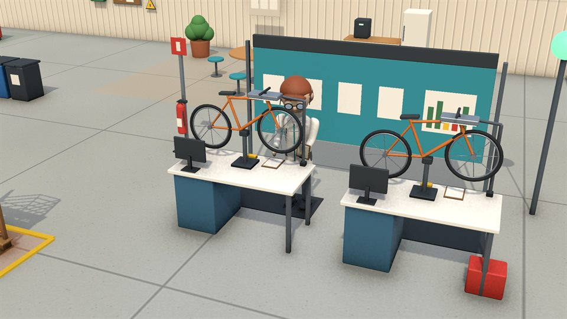
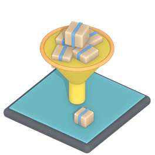
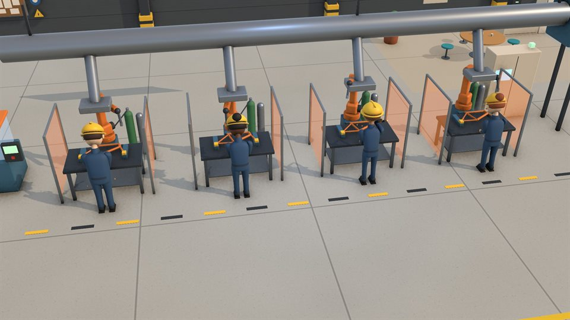
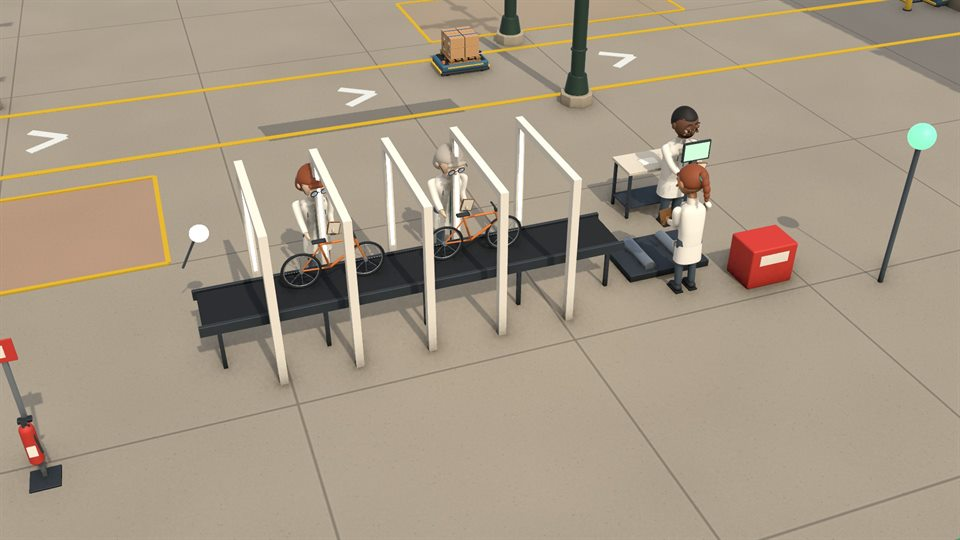
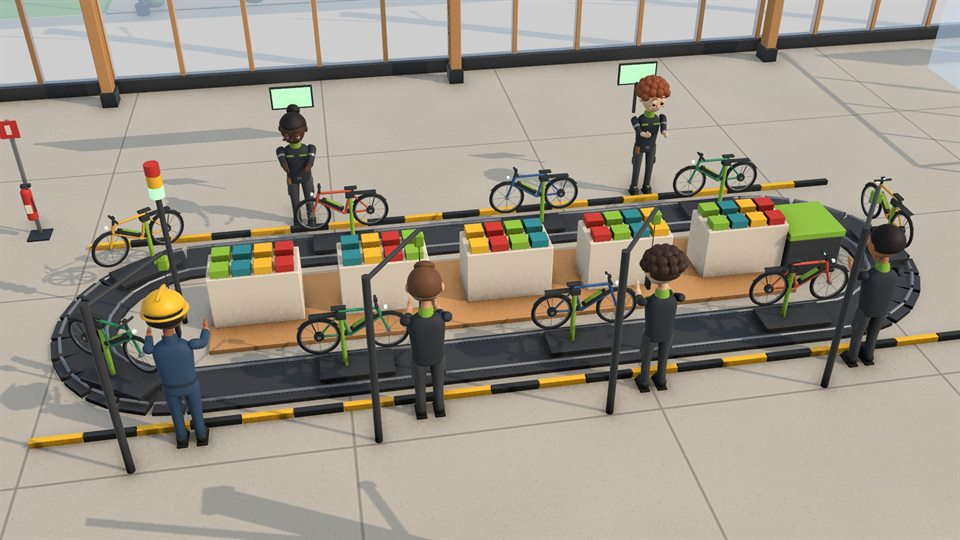
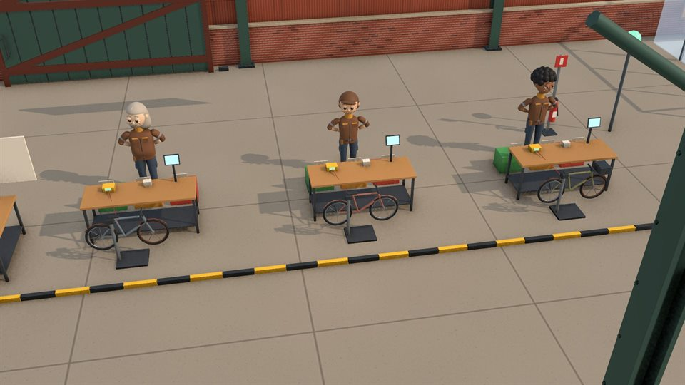
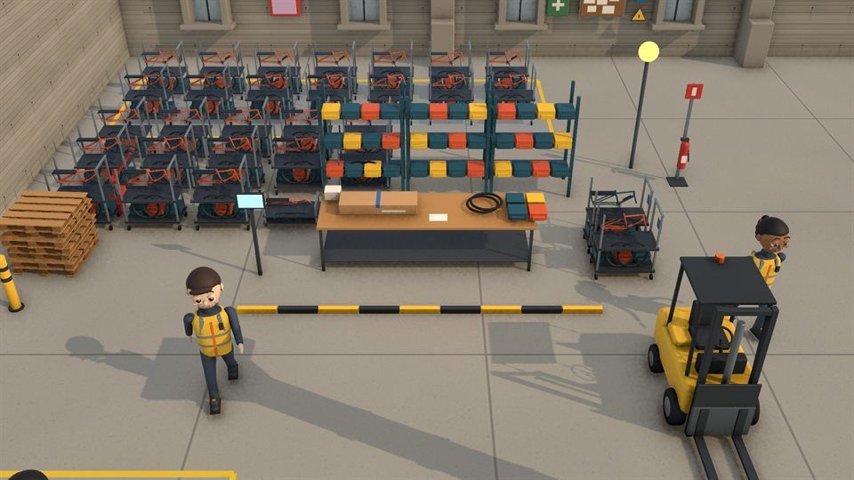

Usine 1 · L'atelier
Trouver le goulot
L'enquête de base, la méthode et ses pièges.

Les palettes s'empilent, les camions attendent, les équipes s'épuisent. Vous dirigez une usine de vélos : trouvez ce qui la limite vraiment, et réglez-le sans tout casser.
Le flux de l'usine nationale un mardi à 15 h 50, relevé dans une vraie partie : ce que chaque poste a fait depuis lundi, et ce qui attend entre eux. Le plus gros stock n'est pas forcément devant le coupable. Dans le jeu, on va voir sur place avant de conclure.
Ce mardi-là : 30 vélos en retard, 74 % des commandes à l'heure pour un objectif de 90 %, 1 095 vélos encore à livrer.
Chaque semaine se joue en trois temps : vous décidez, l'usine tourne sous vos yeux heure par heure, puis le bilan tombe.
Marche sur le terrain (Gemba), entretiens, chronométrage. Une rumeur vous attend dès l'arrivée : c'est parfois une fausse piste.
Le poste et la cause : effectifs, pannes, compétences, réglages. Le verdict vient des faits, pas de votre intuition.
Embaucher, former, déplacer quelqu'un, heures sup, maintenance, équipe du soir, lancer au rythme du goulot. Vous avez peu de créneaux : choisissez.
Les vélos avancent poste par poste, les camions partent ou attendent. Le bilan dit ce que vos choix ont changé, en chiffres.
Une promotion vous envoie dans une usine plus grande, avec un problème d'un autre genre.

L'enquête de base, la méthode et ses pièges.

Absences au jour le jour, soudeurs habilités, remplaçants et tutorat. Puis un salon pour remplir le carnet de commandes.

Chaque changement de teinte arrête la ligne. Préparer pendant la série, un régleur, un standard construit avec l'équipe.

Le tableau de bord dit « conforme » ; l'atelier dit autre chose. Et le client vient auditer.

Chercher, travailler par ressemblance, poser un référentiel.

Une demande en dents de scie : planning réactif ou lissé, supermarché de vélos, îlot sur mesure.
Parfois il faut quitter le bureau. Vous y allez vous-même, tout à la souris, et ce que vous y faites change la suite.
Le jeu est en test : chaque copie est personnelle et ne s'ouvre que sur l'ordinateur pour lequel sa clé a été faite.
Toujours la dernière version de test.
Décompressez le zip, puis lancez FactoryDirector.
Windows si « Windows a protégé votre ordinateur » s'affiche : « Informations complémentaires », puis « Exécuter quand même ».
Mac le jeu n'est pas signé par Apple : ouvrez le Terminal, tapez xattr -cr suivi d'un espace, glissez FactoryDirector dans la fenêtre et appuyez sur Entrée.
L'écran « Copie de test personnelle » affiche le code de votre ordinateur, par exemple
ABCDE-FGH23
Cliquez sur « Copier le code » et envoyez-le à la personne qui vous a parlé du jeu. Vous recevez en retour votre clé, une longue ligne qui commence par FD1.
Collez la clé dans le jeu, cliquez sur « Activer ». Le jeu s'ouvre, et la clé reste enregistrée.
Ensuite, le jeu se met à jour tout seul : quand une nouvelle version sort, le menu propose « Mettre à jour ». Pas besoin de retélécharger ni de réinstaller ; votre clé et vos parties sont gardées.
Une clé ne sert que sur son ordinateur : copier le dossier du jeu chez quelqu'un d'autre, ou lui passer votre clé, ne lui ouvre pas le jeu. Si vous changez d'ordinateur, demandez une nouvelle clé.